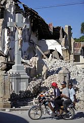

Pat Robertson malversa un poco de fama cada vez que una catástrofe acontece en algún segmento de la población. Sin duda, no es el tipo de fama que dignifica. Aparentemente, las divinidades no fueron generosas a la hora de otorgar a Pat con las adecuadas conexiones sinápticas, por lo que tiene que recurrir a opiniones engalanadas de la imbecilidad más pura para llamar nuestra atención. Y aunque nos hemos reído un montón con sus pensamientos, digamos que, de inagotables deficiencias, algo detrás de Robertson permanece; un mal olor que perdura y cala como el humo por todo el cerebro, infectándolo con memes mezquinos que luego vemos duplicados en esa típica ignorancia que promueve la superstición y el pensamiento ilógico.
Los humanos solemos temerle a todo lo que desconocemos. Es por ello que intentamos explicar lo inexplorado con cualquier idea; si lo que vemos y sentimos no tiene sentido, le otorgamos la aclaración que mejor nos sosiegue, no importa si las evidencias apuntan hacia otro lado. Al día siguiente de conocer la magnitud del desastre causado por el terremoto en Haití, una señora me comenta sobre el supuesto pacto con el diablo que tiene ese país. Lo descarté prontamente, no tenía ganas de discutir algo tan incoherente con ella. “Eso es una tremenda idiotez”, declaré.
Sonriente me contestó, “bueno, en ese pueblo hay mucha maldad. Adoran malos espíritus”.
Aparte de toda la intolerancia escondida detrás del postulado religioso de la señora, no conseguía entender qué tipo de maldad tan magnánima es capaz de mover la tierra para enterrar a niños vivos, sin embargo, estas personas no hablan desde lo humanamente posible, ni siquiera desde lo científicamente demostrable, en esa extraña explicación que poseen sobre los mecanismos del mundo, este monstruo conocido como el diablo existe para ellos, es tan real como mi mano derecha y tan intangiblemente poderoso como cualquier dios. De hecho, hace unos meses, uno de los titulares en un periódico local rezaba: “El Diablo sale en San Pedro de Macorís”, un pueblo en la región Este del país. El artículo describía, con testigos, la supuesta aparición del popular demonio cristiano en el área, unos atribuían el fatídico hecho a la práctica de la brujería por muchos pobladores.

Aparentemente, ya viene establecida en la religión que practique la cercanía entre usted y Lucifer. En ese sentido, casi todo el cristiano que he conocido está de acuerdo en que el vudú es una práctica tan diabólica como todo lo que ellos llaman pagano y hasta peor y, para vislumbrar el miedo que desencadena en un creyente fiel los temas sobre el demonio y la brujería (que, escuetamente, es la versión dominicana del vudú), hay que entrever esa realidad que nace de la inhibición del trabajo racional del cerebro y permite un descontrol gradual en la percepción de las cosas. Es como vivir en un contexto donde cualquier alucinación o proposición posee el potencial de ser real.
Por supuesto, en esto de las creencias, como en casi todo el quehacer humano, es cuestión de grados. Evidentemente, hay creyentes más racionales que otros. Aquí en mi país, por ejemplo, gran parte de la población cree en grande pero no es común el fanático violento que asesina a los que no están de acuerdo con sus ideas; a lo mejor, a lo más que llegue alguien es a recurrir a la brujería y “echarte un mal” o “hacerte un trabajito”. He observado dos actitudes cristianas hacia este tipo de prácticas: la primera la desconoce, descarta su poder como desecha el poder de los dioses del pasado; nadie en su sano juicio invoca ni ora a Zeus en estos días. En el segundo caso están los creyentes que se toman muy en serio todo eso de las maldiciones y los zombis; estas personas, a su vez, asumen una de dos posturas: o usan la creencia como parte de su religión, practicando el catolicismo y la brujería a la vez, por ejemplo; o cierran las puertas a todo lo que esté relacionado con ella porque le temen. Los evangélicos, testigos de Jehová y algunos fieles católicos suelen tomar esta última postura.
La religión y la superstición son viejas acompañantes del ser humano. Los estudios antropológicos confirman una y otra vez que hemos estado adorando divinidades desde que comenzamos a pensar más complejamente que los demás primates. Las teorías sobre el origen de estas prácticas abundan y posiblemente sea la unión específica entre algunas de ellas la que explique mejor lo que realmente ha sucedido durante nuestra evolución, para sostener por tanto tiempo este pensamiento crédulo. Lo que sí es indudable es que toda conducta nace del matrimonio de la biología con el medio y que ambos se afectan y se retroalimentan constantemente. Por ello, conocer el organismo es tan importante como examinar y entender el lugar donde vive, es de la única forma que lograremos encontrar la técnica más efectiva de manipular la relación entre ambos y alcanzar la manera ideal de subsistir saludablemente sobre el planeta.
La “maldición” que algunos creyentes atribuyen a la relación del tan azotado país caribeño con el diablo tiene su origen real en una fusión particular y compleja de variables que muchos autores han intentado explicar. Es la misma confusión que se presenta cuando nos preguntamos por qué entre muchos pueblos con la misma biología y medios similares, sólo unos cuantos progresan mientras otros viven en una eterna lucha por subsistir. En su libro Armas, gérmenes y acero, Jared Diamond analiza fenomenalmente esa conjunción de factores que fecunda el futuro de cualquier pueblo, ciertamente, las creencias de las poblaciones afectan sus acciones, no obstante, son insuficientes a la hora de responder la pregunta de por qué a una población le va mal mientras que otras en situaciones parecidas disfrutan de un relativo progreso.
Atribuírselo a Lucifer es una holgazanería cerebral que debería avergonzar a cualquiera, especialmente cuando las teorías y observaciones que la investigación científica ofrece están basadas en explicaciones sensibles y ancladas en evidencias recopiladas a través de décadas de estudio.
Pero para que una persona pobre en un país tercermundista arribe a la lectura de Jared Diamond tiene que rebasar tantos obstáculos que es posible ganar desalmadas apuestas en su contra. El factor de la educación es vital en la compleja fórmula hacia el progreso y debe estar caracterizado por el pensamiento crítico, aún dentro de la religión, es más, preferiblemente si la educación es religiosa. No podemos continuar adoctrinando infantes, nuestro deber es enseñarlos a pensar y luego dejarlos escoger; es necesario permitir la crítica de cualquier idea y hasta promoverla, millones de creyentes estudian y analizan las debilidades de sus dogmas particulares y aún así continúan creyendo en sus dioses. El conocimiento no necesariamente lleva al ateísmo ni al agnosticismo pero sí permite que nos manejemos mejor como grupo y coordinemos legislaciones que nos beneficien a todos. Más importante aún, un pueblo educado es menos gobernable y tiende a luchar más por sus derechos, no importa si cree en alguna divinidad o no. Hay que promover la lectura que no es cómoda, enfrentarnos con las ideas opuestas y llegar a un acuerdo que las incluya.
Por último, si nos enseñan a cuestionar desde temprano cualquier posición, no importa qué personaje la asuma, las deficiencias intelectuales expuestas por Pat no calarían en tantas mentalidades crédulas ni pasarían de producir hilarantes carcajadas. De hecho, ya existen variaciones de esta específica alucinación religiosa. Un grupo piensa que Dios envió el terremoto como castigo debido al pacto firmado, otros aseguran que es todo el trabajo del diablo. Yo siempre imaginé que un pacto con Lucifer te daba poder y gloria mientras estuvieses vivo y que luego pagabas el precio con tu alma en el infierno y para toda la eternidad. Son los acuerdos que conocí en las historias y las películas, si seguimos esa también desatinada conjetura, entonces, no son las naciones pobres las que han pactado con el señor rojo y de cuernos sino esas naciones que viven mejor que las demás. Por supuesto, cuando cualquier cosa puede tener sentido, nada lo tiene.
No debemos permitir que los fallos neurológicos y de formación de unos cuantos vivos penetren cerebros infantiles y de adultos quebrantables, promoviendo con estupideces el odio y el desprecio hacia toda una población. Aceptar la opinión de que todo un pueblo tiene un pacto con un monstruo y por eso les va mal es no querer admitir nuestra propia responsabilidad en la pobreza humana y acomodarnos en una actitud intolerante y despreciable; además de que nos obliga a aceptar el hecho de que hemos sido dominados por una seria y corrosiva pereza intelectual.
Cuerpo fuerte en mente débil
La esclavitud intelectual
Una foto impertinente anda recorriendo en cadena las cuentas de correos electrónicos del mundo; cuando arribó a la mía, no hizo más que causarme ira. En la imagen, una efigie del crucificado y popular hijo del dios cristiano se mantiene ilesa entre los escombros de una iglesia, el titular reza: “Los milagros del Señor, lo único que quedó intacto en Haití”. No encuentro la forma de ver esta imagen como algo positivo, no atino a descubrir la manera de regocijarme ante personas que, o han rehusado pensar o sencillamente poseen un modo muy vil de entender el trabajo de sus dioses.
Si mi divinidad decide realizar un milagro en medio de una catástrofe, digamos que por ocultas razones no puede prevenirla, espero que elija el milagro de salvar vidas. Pero si por casualidad, esta deidad a la que le dedico mi tiempo libre y cuyas reglas he decidido aceptar, opta por usar su poder para mantener indemne a una entre las tantas estatuas de su hijo muerto, pues yo, personalmente, la desterraría; mucho menos se me ocurriría promover el incongruente hecho como algo excepcional, en realidad lo escondería y me avergonzaría de adorar a un dios tan vanidoso, superficial y cruel; más aún, me obligaría a cuestionar profundamente lo que espero de mi fe cuando una irrazonable explicación a una coincidencia es suficiente para calmar la convicción que tengo sobre mis doctrinas.

Pero misteriosos son los caminos del cerebro y complicada la investigación para desentrañarlos. Miremos un momento el caso de Ana. La señora padeció de un derrame cerebral que la dejó con la característica sonrisa de medio lado, una de las señales de la parálisis causada por el daño en el hemisferio opuesto. No obstante, cuando la hermana de Ana, Silvia, entra a la habitación, Ana, que la adora, prorrumpe en una sonrisa de ambos lados que no muestra rastro alguno del derrame. No, no es un milagro del amor tampoco. Condiciones como las de Ana han ayudado a los neurólogos a entender los mecanismos que manejan nuestras sonrisas y en el cerebro existen dos caminos para sonreír. La vía que produce la sonrisa espontánea que expresa nuestro rostro cuando vemos a alguien que queremos, recorre zonas más primitivas y autónomas; la otra que usamos cuando nos piden que sonriamos o tenemos que hacerlo por razones protocolarias, anda por regiones más racionales y operarias. Lo mismo ocurre con los bostezos, personas con derrames en el hemisferio izquierdo, por ende, con el lado derecho inmovilizado, levantarán ambos brazos al momento de bostezar. Usted ya puede deducir por qué, los caminos del bostezo son distintos a los dañados; en un derrame, no es el brazo que está mal sino que el cerebro no puede comunicar la información desde el área que lo mueve pero sí puede alzarlo desde áreas más autónomas como las que provocan el acto de bostezar y que no han sido afectadas por el infarto cerebral. Ciertamente, el órgano de los pensamientos tiene incontables agendas propias.

No sé si existirá una falla neurológica que explique la ausencia de razonamiento que acompaña a estos inútiles e irracionales “milagros” pero, indiscutiblemente, en tiempos de insondables tragedias parecen llenar un vacío en los innumerables y bienintencionados caminos cerebrales de millones de creyentes. Y he notado que eliminar la falla no descuadra la creencia. Cuando he apuntado hacia este error de lógica, varios cristianos lo aceptan como irrazonable y no por ello dejan de creer ni descartan otros aspectos de su fe. Esta posibilidad de actuar racionalmente desde cualquier creencia debe ser razón suficiente para que se mantenga abierta la opción de cuestionar, analizar y criticar los dogmas, esta franqueza intelectual también permitirá enriquecer y hasta promover la regeneración cerebral. La neurología ha descubierto que los cerebros adultos se benefician si se ponen a prueba sus ideologías, todo eso en lo que uno se ha acostumbrado a creer o a no creer. El ejercicio intelectual más valorado en estos días es, precisamente, el que lo extrae de esa zona cómoda y lo deposita en medio de una mesa redonda cuyos miembros poseen argumentos contrarios a los suyos.
“El cerebro posee una impresionante plasticidad y continúa cambiando, no en tamaño sino en la complejidad que admite entre sus neuronas, lo que nos permite profundizar más. Como adultos, no aprendemos quizá tan rápido como antes pero sí estamos en un peldaño que nos facilita captar el punto general de las cosas. Nada mejor para las neuronas de una persona de 60 años que confrontar opiniones contrarias”, explicó en el diario The New York Times, Kathleen Taylor, profesora especializada en técnicas para la enseñanza adulta en el Colegio Universitario St. Mary.
La censura y la prohibición no ofrecen beneficios, la investigación y el conocimiento sí. Las personas de fe no deben temerle a ningún tipo de exploración, deben aceptar el progreso y encontrar también un camino para sus prácticas religiosas, si no lo hacen, sus creencias serán devoradas por el tiempo y transformadas en mitologías. Los credos deben evolucionar si desean mantenerse vivos, además, cuando lo hacen evitan problemas innecesarios, obstáculos irrelevantes que impiden fortalecer a cada persona con todo el conocimiento que poseemos actualmente. Desde que el ser humano se dio cuenta de que podía esclavizar a otros a través del uso del terror y el fomento de la ignorancia, la fórmula para conseguirlo es bien conocida: “mantén sus cuerpos aptos para el trabajo y sus mentes débiles”. Todavía hoy, continúa funcionando.
Volver al índice de la Lupa Herética
© 2008-2021 Glenys Álvarez y Sin Dioses. Prohibida la reproducción con fines comerciales.
Comentarios
Comments powered by Disqus